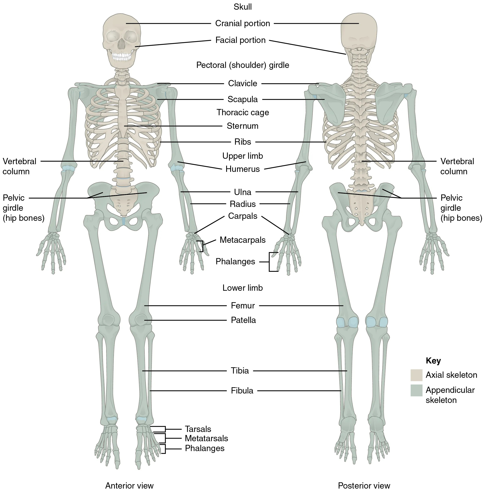

动物界中支持骨架有3种形式：流体静力骨骼、外骨骼和内骨骼。自软体动物开始，骨骼系统支持动物的身体，提供肌肉附着点以及保护体内脆弱的器官；动物的运动是由骨骼和骨骼肌共同来完成的。

流体静力骨骼 = 一个由流体充满的囊，液体不能被压缩，因而提供了极好的支持。代表动物：原生动物、蠕虫、腔肠动物、软体动物和环节动物。
特点：没有固定的形状，依赖体壁中的肌肉维持体形，肌肉收缩的力量作用在充满流体的腔上。
举例（蚯蚓运动）：环肌收缩 → 纵肌因流体压力而伸展 → 身体变长；纵肌和环肌交替收缩 → 身体向前运动。
外骨骼 = 软体动物外套膜分泌的碳酸钙贝壳 + 节肢动物几丁质体表。
关键特征：肌肉附着在外骨骼的内表面；外骨骼为非细胞结构，由外胚层发育而来的细胞所分泌的分泌物组成。
脊椎动物具有中胚层发育而成的、位于体内的内骨骼。肌肉附着在内骨骼的外表面。内骨骼由软骨和硬骨组成，不仅是支持和保护结构，也是机体最大的钙库。内骨骼由细胞及其间质构成。
无脊椎动物中的内骨骼特殊案例：
演变主线：脊索 → 软骨 → 硬骨
活的骨骼组织具有三个重要特性：①不断生长且不停止功能执行；②有极好的修复能力；③有惊人的适应环境能力。这些特性保证了生命活动的持久性。
脊椎动物骨骼系统演化里程碑：